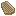

1.20.1 / (Addon) Firmalife / 養蜂

養蜂
養蜂
蜂の巣はミツバチを住まわせる場所です。ミツバチの巣箱には、ミツバチが住むための巣枠が必要です。
活動中の巣箱から巣枠を取り除くと、夜間や巣箱の下に焚き火を置いていない限り、ミツバチはあなたを攻撃します。
蜂の巣は花を共有することができます。
花の恩恵は60輪を超えると減少していきます。


ミツバチの巣は、半径5ブロックの範囲を認識します。
巣箱の周りに少なくとも10個の花があれば、空いた枠に嬢王蜂が入る可能性があります。
これは蜂の粒子が巣箱の周りを飛び回ることでわかるでしょう。
巣に4つの空き枠があると、ハチが移動してくる可能性が非常に高くなります。
ハチの巣箱に女王蜂がいる枠が2つと、空の枠が1つある場合、2つのコロニーは繁殖し、空の枠に新しい女王蜂を産む可能性があります。
これにより、それぞれの親のアビリティが子孫に受け継がれていきます。
アビリティとは、ミツバチが持っているさまざまな特性のことで、周囲の世界に影響を与えます。
アビリティーは1～10まであり、10が最大です。


ミツバチはハチミツも生産します。
ハチミツが溜まっているように見える巣に空のビンをRight Clickでを使用すると、蜂蜜瓶が得られます。
蜂蜜瓶を開けると、砂糖の代用品である生の蜂蜜が手に入ります。
養蜂箱のインベントリにあるハチの巣にナイフを持ちRight Clickを押すと、いろいろな用途に使える蜜蝋が手に入ります。
ただし、これは枠の中の女王蜂を殺してしまうので注意してください！

8

蜜蝋の最も重要な用途は、加工木材の製造です。
ミツバチの心得
- ミツバチはプランターに肥料をやるのを手伝う！
- 巣を削ると嬢王蜂が犠牲になる。賢くあれ！
- 濡れていると、ハチが攻撃してくるのを防げる。
アビリティ一覧
- 耐久性：ミツバチが低温でもハチミツを生産できるようになります。耐久性10では-16℃まで、耐久性1では2℃までです。
生産：ハチミツの生産速度を向上させます。
- 突然変異：繁殖により受け継がれるアビリティのばらつきが大きくなります。
- 繁殖能力：繁殖の可能性が高まります。
- 作物親和：作物に少量の養分を撒く可能性があります。
- 自然修復：蜂の巣の周りに新しい花とスイレンの葉を咲かせます。
- 落ち着き：ハチがあなたを攻撃する可能性が減ります。
高い突然変異能力を持つミツバチは、遺伝子疾患を発症する可能性があります。
病気にかかったミツバチはその病気を子孫に伝え、ハチミツを生産しません。